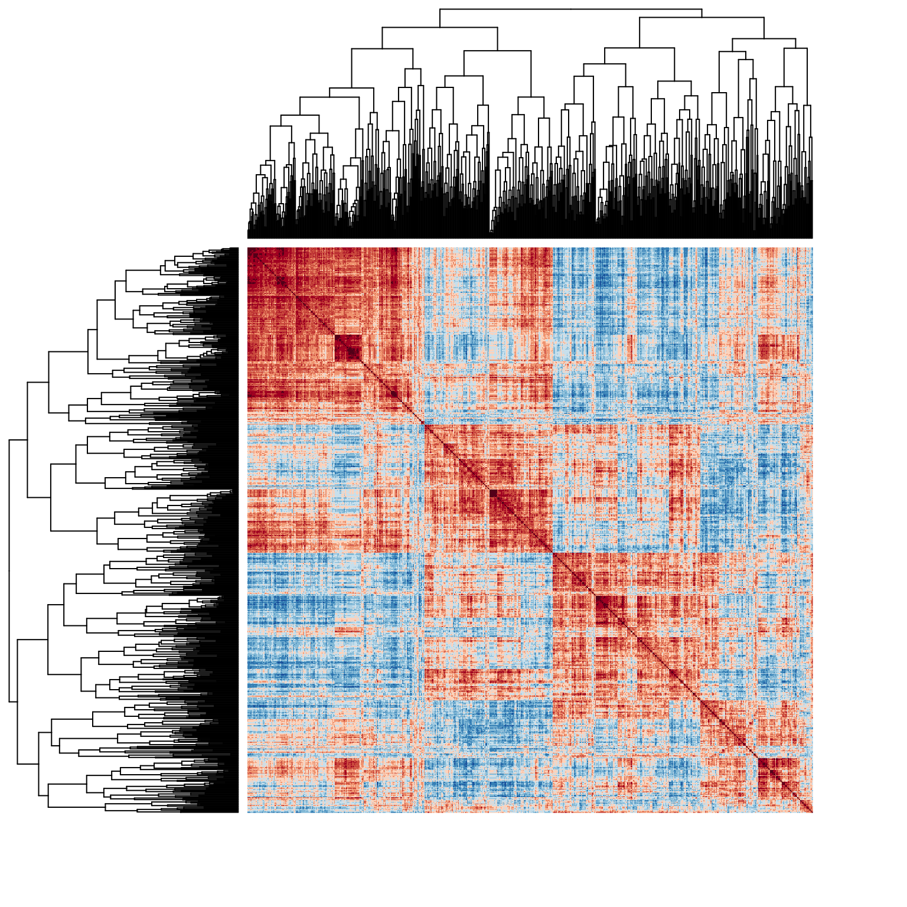

The
Abyss
The Science-based Assessment of Deep Personality
Documentation
The
The Science-based Assessment of Deep Personality
Research-grade measures · immediate results · entirely anonymous
Documentation
A battery of validated questionnaires, gamified. The run is dressed as a descent: each level is deeper water, and every stretch of it closes on a figure drawn from the answers — a body, a hill, a sea — rather than on a page of scores.
It is built to be changed. The questions are data rather than code, so a scale can be added, dropped or moved without touching the engine, and a study can ask a named subset of the blocks from its own recruitment link.

Self-report data are held back less by the instruments than by the answering. A long battery is often met by somebody with no stake in it who wants to be finished: straight lines down the page, the middle of every scale, a second an item. No amount of validation survives that.
So the wager is a plain one — give people something worth reaching, and they read the question they are answering.
| Level | Questionnaire | Dimensions | Items |
|---|---|---|---|
| 1 | Demographics | — | 6 |
| 1 | Five-Item Personality Inventory (FIPI; Gosling et al., 2003) | Extraversion, Agreeableness, Conscientiousness, Emotional Stability, Openness | 5 |
| 1 | Single Item Narcissism Scale (SINS; Konrath et al., 2014) | — | 1 |
| 1 | Single-Item Self-Rated Health (SRH; DeSalvo et al., 2006) | General Health | 1 |
| 1 | Single-Item Measure of Stress Symptoms (SIMS; Elo et al., 2003) | — | 1 |
| 1 | Single-Item Self-Esteem Scale (SISE; Robins et al., 2001) | — | 1 |
| 1 | Self-Concept Clarity Scale, item 11 (SCCS; Campbell et al., 1996) | — | 1 |
| 1 | Meaning in Life Questionnaire, item 8 (MLQ; Steger et al., 2006) | — | 1 |
| 1 | General Self-Efficacy Single-Item (GSE-SI; Di et al., 2023) | — | 1 |
| 1 | Single-Item Life Satisfaction Scale (SILS; Cheung & Lucas, 2014) | Life Satisfaction | 1 |
| 1 | Self-placement items | — | 2 |
| 2 | Demographics | — | 9 |
| 2 | Multidimensional Interoceptive Traits questionnaire (MINT; Makowski et al.) | Bodily Awareness, Bodily Clarity, Bodily Sensitivity | 34 |
| 3 | Beliefs about Artificial Intelligence Technology (BAIT; Makowski et al.) | AI Realism, AI Apprehension, AI Enthusiasm | 27 |
| 4 | Subjective financial well-being (ESS / OECD item) | — | 1 |
| 4 | MacArthur Scale of Subjective Social Status (Adler et al., 2000) | — | 1 |
| 4 | Patient Health Questionnaire-4, refined 5-option version (PHQ-4; Kroenke et al., 2009; Makowski et al., 2025) | Anxiety, Depression | 4 |
| 4 | Single-Item Sleep Quality Scale (SQS; Snyder et al., 2018) | Sleep | 1 |
| 4 | Psychiatric history | — | 2 |
| 4 | HiTOP Brief Report (HiTOP-BR; Simms et al., 2026) | Dominance, Unusual Experiences, Bodily Complaints, Solitude, Emotional Intensity, Impulsivity | 46 |
| 5 | HEX-ACO-18 (Olaru & Jankowsky, 2022) | Honesty-Humility, Emotionality, Sociability, Patience, Diligence, Curiosity | 19 |
| 5 | Social Desirability-Gamma Short Scale (KSE-G; Kemper et al., 2014) | — | 6 |
| 6 | Open Source Archetype Indicator – Pearson-Marr (OSAI-PM) | Idealist, Sage, Seeker, Revolutionary, Magician, Warrior, Realist, Jester, Lover, Creator, Ruler, Caregiver | 37 |
| 7 | Primals Inventory-18 (PI-18; Clifton & Yaden, 2021) + five tertiary scales (PI-99; Clifton et al., 2019) | Enticing, Alive, Safe, Acceptable, Changing, Hierarchical, Interconnected, Understandable | 41 |
| 8 | ICAR-16 Sample Test (ICAR16; Condon & Revelle, 2014; Young & Keith, 2020) | Verbal, Logical, Visual, Spatial | 16 |
| 9 | Adult ADHD Self-Report Scale v1.1, items 1-2 (ASRS; Kessler et al., 2005) | Inattention | 2 |
| 9 | Cognitive Failures Questionnaire, items 10 and 21 (CFQ; Broadbent et al., 1982) | Absent-mindedness | 2 |
| 9 | Mind Wandering: Spontaneous, items 1 and 4 (MW-S; Carriere et al., 2013) | Mind Wandering | 2 |
| 9 | Brief Self-Control Scale, items 1-2 (BSCS; Tangney et al., 2004) | Self-Control | 2 |
| 9 | Emotion Reactivity Scale, six items (ERS; Nock et al., 2008) | Emotional Sensitivity, Emotional Arousal, Emotional Persistence | 6 |
| 9 | Cognitive Emotion Regulation Questionnaire, short form (CERQ-short; Garnefski & Kraaij, 2006) | Self-blame, Acceptance, Rumination, Positive Refocusing, Refocus on Planning, Positive Reappraisal, Putting into Perspective, Catastrophising, Other-blame | 19 |
| 10 | Closing items | — | 2 |